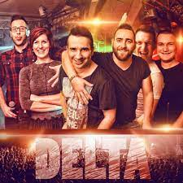

Delta
A zenekar 1996-ban, a Zala megyei Söjtörből indult. Jelenlegi tagjai:Szabó Peti alapító tag, énekes és a saját
dalok szerzője, producere. Énekesnőnk Gombkötő Ildikó, billentyűs hangszerek-vokál Szalai Balázs, basszus és rap
Olasz Ádám, gitár és billentyűk Víg Dani, illetve a doboknál Hordós Dani. A könnyű és slágeres műfajon belül
“Stílusfüggetlen zenekarként” határozták meg magukat.

Íme néhány daluk:
Két pejló
Ragyog a világ
Süt a nap
A kocsmába leszek